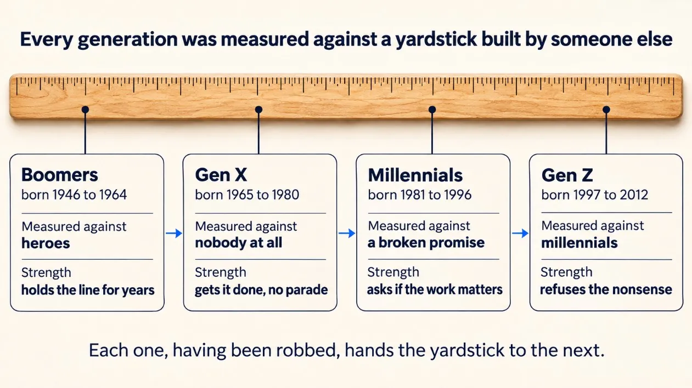

In the Shadow of the Greatest Generation
Every generation was handed a yardstick built by someone else. A Gen X leader on what The Fourth Turning taught him about boomers, millennials, Gen Z, and the man in the mirror.
Maybe you've heard this said. Boomers own the houses. Boomers own the companies. They won't retire, they won't delegate, and they call the rest of us entitled from a pension the rest of us will never see. You've heard it at the bar after work, in the group chat, in the car on the way home. If you're under fifty and you just nodded, I know. I was born in 1977, Gen X with a little millennial leaking in at the edges, and I've spent most of my working life nodding along too.
Now, before anyone forwards this to HR, understand something. I'm not repeating that to be clever. It's an opinion a lot of people carry and almost nobody says out loud at work. So let's say it, and then let's see if it holds up.
And here's the funny part. Whatever year you were born, you're reading this right now thinking, I can't stand those damn, and then filling in the blank with somebody else. The boomer reading this just thought millennials. The millennial thought boomers. Gen Z thought all of you. Gen X thought nothing, because Gen X doesn't read articles about generations, they just mutter and go back to work. Every one of us has a blank, and every one of us is certain ours is the correct one.
Then I read The Fourth Turning, and it ruined a perfectly good grudge.
The book argues that generations aren't random. They come in cycles, each one shaped by the season of history it grew up in, and each one reacting against the last. I was reading it to understand the boomers. About halfway through I put it down and said, out loud, in my kitchen, hold on a second. Because the chapter about my generation read like a performance review I hadn't asked for.
Comparison is the thief of joy. Teddy Roosevelt supposedly said it, and if he didn't, he should have. I've used that line for years about individuals. It turns out it works on entire generations too, and every one of us has been robbed.
Here's the game we all play. Boomers hoarded the houses. Gen X is too checked out to care. Millennials need a trophy for showing up. Gen Z will quit over a vibe. Everyone has a line about everyone else, and everyone is certain their own generation is the sensible one.
I lead people, and I write about leadership, so let me say this plainly. If you lead a team that spans four generations, you are managing four different wounds, four different superpowers, and four different sets of excuses. This article is going to poke every one of them, including mine. Especially mine. If you get to the end and think, yes, exactly, the problem is those other people, read it again. You missed something.
Boomers Didn't Steal Your House. They Were Robbed First.
Start with the easy target. Boomers get the hardest rap of any living generation, and some of it is earned. But picture the household they grew up in. Dad came home from Europe or the Pacific. Mom built the planes he flew. And before they'd finished school, the country had already crowned their parents the Greatest Generation, capital letters and all.
How do you live up to that? You can't. You will never save the world, because somebody already did it and he's sitting at the head of the table at Thanksgiving. So a lot of boomers did the only sane thing available. They said, fine, I'll make my own way. What I build is mine, and I'm not handing it over to be graded.
That's the shadow side, and if you work with them you know it. Boomers confuse presence with contribution. They think a meeting is where work happens and that a long day is the same as a good one. They built the ladder, and they're genuinely confused why you won't just climb it the way they did. And they do not let go. Of the house, the role, the credit, or the way things are done.
You've seen it. It's 5:45, the work is done, and Ron is still at his desk reading the same email for the third time. He isn't working. He's waiting to see who leaves first. And tomorrow, in the meeting, he'll mention who did.
But here's what the jokes miss. Boomers will outlast you. When the project is on fire and everyone under forty has started polishing their LinkedIn, the boomer is still at the desk. They don't need the work to be meaningful. They need it to be done. If you want someone to hold a line for ten years, you want one of them.
Gen X Is Running Your Company. Nobody Told Them.
Strauss and Howe call them the Nomads, and it fits. Gen X were the latchkey kids. They grew up while the institutions their grandparents built were coming apart and their parents were busy finding themselves. Nobody crowned Gen X anything. Nobody even noticed they'd left the room.
So they learned early that no one was coming to help, and they built an entire personality around not needing anyone. Practical. Skeptical. Quietly, almost aggressively, self-reliant. And right now they're sitting in most of the leadership chairs, holding the management layer together while the boomers above them won't retire and the generations below them won't stop talking.
The shadow side is that Gen X is allergic to needing people, and it shows. They won't ask for help. They won't give feedback until someone has already quit. They'll fix the problem themselves at eleven at night rather than teach anyone how. And they have a cynicism they mistake for wisdom. Ask a Gen X leader about the new initiative and watch the eyebrow. That eyebrow has killed more good ideas than any budget cut.
Picture it. It's eleven at night and the report that was due at nine the next morning is broken. Dana could ping the analyst who built it, walk him through the fix, and have a better analyst by Friday. Instead she opens the spreadsheet, fixes it herself, and goes to bed at one. In the morning she says nothing. The analyst never learns there was a problem. Dana never learns to let anyone in.
I'd love to tell you Dana is a composite. She's not. She's me, on a Tuesday, more often than I want to admit. I wrote that paragraph, read it back, and said a word I won't print here. That eyebrow I mentioned? I've got one. It's killed ideas from people who deserved better than my skepticism.
But the strength is enormous. Gen X just gets it done, without a parade and without a mission statement. They are the most trustworthy people in your building precisely because they never needed your approval. Hand them a mess and walk away. It'll get handled, and they won't tell you about it.
Nobody crowned Gen X anything. Nobody even noticed they'd left the room.
Millennials Aren't Soft. They Just Read the Contract.
Millennials were raised to be special. Not by accident. Boomer parents who'd grown up starved of attention made sure their kids got all of it. Soccer trophies, college applications, the whole thing. Then millennials walked into the workforce in 2008 and found that the ladder had been removed and the building was on fire.
The shadow side is that millennials want a career path, a mission statement, and a feelings check-in, and they'd like all three by Thursday. They want to know why before they'll do what. They'll leave a good job for a slightly better one with better values, and they'll be very articulate about it on the way out. To a Gen X boss, that reads as needy. To a boomer, it reads as soft.
Here's the scene. Marcus has been in the role for eight months and asks for a meeting about his growth plan. His Gen X boss stares at him like he's asked for a pony. Marcus leaves the meeting thinking nobody here cares about his future. His boss leaves thinking the kid wants a promotion for surviving two quarters. They're both wrong, and neither of them will say so.
But it's neither. Millennials are the first generation to actually ask whether the work matters, and they refuse to pretend it does when it doesn't. They're collaborative in a way that drives the lone wolves crazy, and they're the reason your company finally wrote down its values instead of just assuming everyone knew them. They care. Loudly. That's a feature.
Gen Z Isn't Lazy. They're the Only Ones Who Noticed.
Gen Z grew up watching millennials do everything right and get nothing for it. They watched the hustle, the burnout, the loyalty that was never returned. So they drew a conclusion the older generations find genuinely offensive: the deal is off.
The shadow side is real. Gen Z will leave a job over a vibe and announce it in a video with background music. They'll tell you in the interview what they won't do. They treat a boss the way you'd treat a customer service line, politely and with no particular loyalty. Their tolerance for discomfort is low, and they have the attention span of a group chat.
Watch this one. The manager says, we need everyone in the office Friday for the all-hands. Priya, twenty-three, asks what will be covered that couldn't go in an email. The room goes quiet. The boomer thinks she's rude. The Gen X manager thinks she's got a point and won't say it. The millennial next to her is quietly thrilled someone finally asked. Priya just wanted to know.
But here's the thing. They won't tolerate nonsense that every generation before them learned to swallow. The unpaid overtime, the manager who yells, the meeting that could have been an email. Gen Z looked at all of it and said, why? And nobody had a good answer. They are the most honest generation you'll ever lead, and they're going to make work better for everyone, including the people currently complaining about them.
Every Generation Got Robbed. Then Robbed the Next One.
So here's the pattern. Each generation was handed a yardstick built by somebody else, and then resented for the ways they didn't fit it. Boomers were measured against heroes. Gen X wasn't measured at all. Millennials were measured against a promise that got broken. Gen Z is measured against millennials and has decided not to play.
Every one of those is a theft. And every generation, having been robbed, turns around and robs the next one. That's the cycle Strauss and Howe are describing, and it isn't a moral failing. It's the weather.

Your Favorite Generation Is Your Biggest Blind Spot
If you run a team that spans three or four generations, this isn't theory. It's Tuesday. So here's what I'd do.
- Stop benchmarking one generation against another. The moment you tell a Gen Z hire that boomers would have stayed until seven, or tell a boomer that the young ones pick this up faster, you've stolen something from both of them. You've also told each of them that you see a category, not a person.
- Ask what season shaped them. The sixty-year-old who won't delegate may not be selfish. He may have learned early that nothing he did would ever be enough, so he stopped looking for approval. The twenty-four-year-old who won't stay late may not be lazy. She may have watched her older cousin give a company ten years and get a cardboard box. Those are different conversations than the ones you'd have with a slacker.
- Don't skip the middle. Gen X is holding your management layer together, and they're used to being left out of the conversation. The leader who learned to need nothing from anyone will never ask for recognition, which is exactly why you should offer it.
- Lead to the strength, not the stereotype. Give the boomer the long hard thing. Give Gen X the mess and the autonomy. Give the millennial the why. Give Gen Z the honest answer. And then get out of the way.
And then do the hard part: turn it on yourself. I've led the Gen X way for twenty years. Handle it quietly, trust nobody who hasn't earned it, and treat asking for help as a character flaw. It built a career. It also built a team that waits for me to fix things, because I taught them to. The season that shaped me isn't an excuse. It's a diagnosis. If I'm not willing to change how I lead, every generation under me will eventually leave, and they'll be right to. Same goes for you, whatever year you were born.
The season that shaped me isn't an excuse. It's a diagnosis.
Nobody Gets to Be the Greatest. Not Even Them.
The Greatest Generation didn't choose that title. It was handed to them, and then it was used as a stick on their kids, who used it on theirs, and so on down the line. We've been fighting about who stole what from whom for eighty years.
The only way out is to stop keeping score. Not because the differences aren't real. They are, and I just spent two thousand words poking at them. But the scoreboard was never fair, and it never made anyone better. Lead the person in front of you, shaped by the season they came up in, and let the comparison go. Comparison is the thief of joy. Stop handing it the keys.